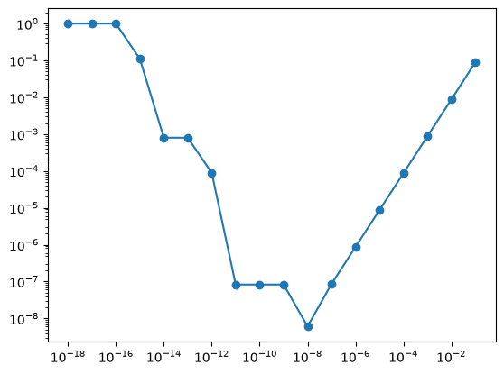

Numerical differentiation#
REFS:
Ward; Kincaid; Numerical mathematics and computing
Wikipedia
Computing derivatives is the core of many of the numerical work done in computational physics. But it is not a trivial problem to do so with good accuracy. Numerical derivatives are the core computation in finite difference methods, optimization problems, interpolations and many more.
First approach: forward difference#
This is based on either the a Taylor expansion for a given function, or in the actual definition of the derivative (see https://en.wikipedia.org/wiki/Numerical_differentiation)

where \(h\) is a parameter that ideally goes to zero but in practice that cannot be done due to numerical accuracy. You can also define the backward derivative by just using the previous point. The error estimate can be computed using a Taylor expansion.
A better estimation: Central difference#
If you compute a forward (\(+h\))
and a backward (\(-h\)) Taylor expansion,
and then you subtract the second from the first (notice that adding then allows you to compute the second order derivative), you get
which is called the central difference. The order is improved and this version is better than the simple forward difference. See: https://en.wikipedia.org/wiki/Finite_difference


By using Richardson extrapolation, you can improve even more the central difference estimation,
where \(\phi(h)\) is the derivative estimation from the central difference with a given \(h\) value.
Other important cases#
Interpolating data and then estimating the derivative
Derivative of noisy data: first compute binned averages and then derive.
Higher order derivatives
N-dimensional derivatives.
Scipy: scipy.misc.derivative#
Of course, scipy offers you a nice function to compute and arbitrary order derivative. You can find the documentation in https://docs.scipy.org/doc/scipy/reference/generated/scipy.differentiate.derivative.html
import numpy as np
from scipy.differentiate import derivative
# 1. Define your function
def f(x):
return x**3 + x**2
# 2. Compute the derivative at a point (e.g., x = 1.0)
# f'(x) = 3x^2 + 2x -> f'(1) = 5.0
result = derivative(f, 1.0)
print(result) # Output contains both the estimate and convergence metadata
success: True
status: 0
df: 4.999999999999994
error: 8.881784197001252e-16
nit: 2
nfev: 11
x: 1.0
Exercises#
Comparing derivatives#
To compare the numerical order of the different methods shown, compute the derivative, as a function of \(h = \{0.1, 0.001, 0.001, 10^{-4}, \ldots, 10^{-18} \}\), using \(f(x) = \sin x\), and \(x=\pi/3\). Compare with the exact value (from np.cos) and plot the relative difference for the three methods.
# %%writefile plot_derivs.py
import numpy as np
import matplotlib.pyplot as plt
from scipy.differentiate import derivative as spderiv
def forward(f, x, h):
return (f(x+h)-f(x))/h
def central(f, x, h):
# YOUR CODE HERE
pass
def central_richardson(f, x, h):
# YOUR CODE HERE
pass
def compare_derivatives():
fig, ax = plt.subplots()
h = np.power(10.0, np.arange(-18, 0, +1))
x = np.pi/3
deriv_exact = np.cos
fun = np.sin
algnames=["forward", "central", "central_richardson", "scipyderiv"]
for alg, algname in zip([forward, central, central_richardson, spderiv], algnames):
if algname == "scipyderiv":
result = alg(fun, x, initial_step=h)
result = result.df
else:
result = alg(fun, x, h)
diff = np.abs(1 - result/deriv_exact(x))
ax.loglog(h, diff, '-o', label=algname)
ax.set_xlabel(rf"$h$", fontsize=20)
ax.set_ylabel(rf"$\Delta$", fontsize=20)
fig.legend()
plt.show()
fig.savefig("derivs.pdf")
compare_derivatives()
---------------------------------------------------------------------------
TypeError Traceback (most recent call last)
Cell In[3], line 1
----> 1 compare_derivatives()
Cell In[2], line 35, in compare_derivatives()
31 result = result.df
32 else:
33 result = alg(fun, x, h)
34
---> 35 diff = np.abs(1 - result/deriv_exact(x))
36 ax.loglog(h, diff, '-o', label=algname)
37 ax.set_xlabel(rf"$h$", fontsize=20)
38 ax.set_ylabel(rf"$\Delta$", fontsize=20)
TypeError: unsupported operand type(s) for /: 'NoneType' and 'float'

Error from Taylor series#
Determine the error term in the formula $\(f'(x) \simeq \frac{1}{4h} [f(x+3h) - f(x-h)]\)$
YOUR ANSWER HERE
Lanczos Method#
Extend the derivatives comparison exercise by adding the following estimation $\(f'(x) \simeq \frac{3}{2h^3} \int_{-h}^h tf(x+t) dt .\)$ How is the order of the approximation?
# YOUR CODE HERE
pass
Tracker data#
Record a video of a particle undergoing parabolic motion. Compute the trajectory using tracker. Export and process the positions using the central difference algorithm to estimate the velocity. How does your estimation compares with the one done by tracker? what method does tracker use?
YOUR ANSWER HERE
Proyecto con dato reales#
Modalidad: Trabajo grupal (2 a 3 estudiantes)
Formato de entrega: Archivo comprimido (.zip) con Notebook de Jupyter (.ipynb) y archivos crudos de datos/video.
Cada grupo debe entregar una carpeta comprimida con la siguiente estructura:
Grupo_XX_TallerNumerico/
│
├── Taller_Numerico.ipynb # Jupyter Notebook apellidos y nombres de los integrantes, código, gráficas explicativas y markdown. Debe poder ejecutarse.
├── datos/
│ ├── video_original.mp4 # Video utilizado para Tracker (Opcion 1)
│ ├── datos_tracker.csv # Datos exportados de Tracker (opcion 1)
│ └── datos_phyphox.csv # (Solo para Opción B) Datos crudos del acelerómetro
Solamente entrega una persona por grupo.
Instrucciones Generales#
Para este taller, cada grupo debe elegir UNA (1) de las dos opciones presentadas a continuación. Ambas opciones exploran cómo los métodos de cálculo numérico (diferenciación finita e integración numérica) se comportan frente a señales y datos del mundo real con ruido de medición y errores de discretización.
Reglas Obligatorias de Implementación:#
Algoritmos propios: Deben escribir sus propias funciones vectorizadas con
numpypara los esquemas de diferenciación e integración solicitados antes de usar cualquier función de biblioteca (comonp.gradient,scipy.integrate.trapezoid, etc.).Uso de librerías para validación: Solo después de implementar sus métodos pueden comparar contra las funciones de
scipyonumpy.Autenticidad de datos: Todo grupo debe adjuntar su video original (
.mp4), el archivo de calibración/seguimiento (.trko exportado de Tracker) y/o el archivo.csvexportado de los sensores.
OPCIÓN A: Cinemática de un Proyectil con Tracker y Cálculo Numérico#
Objetivo#
Analizar la cinemática en dos dimensiones de un movimiento parabólico a partir de un video real, implementando diferentes esquemas de diferencias finitas para estimar velocidades y aceleraciones, y aplicando cuadratura numérica para reconstruir la trayectoria.
1. Captura de Datos Experimentales#
Graben un video nítido de un objeto (pelota, esfera pequeña) en movimiento parabólico con fondo contrastado y una referencia de escala conocida (regla, cinta métrica).
Usen el software Tracker (physlets.org/tracker) para extraer la tabla de datos: tiempo \(t\), posición horizontal \(x(t)\) y vertical \(y(t)\).
Exporten también las velocidades y aceleraciones estimadas internamente por Tracker para utilizarlas como referencia comparativa.
2. Diferenciación Numérica y Estimación de \(g\)#
Implementen en Python sus propias funciones para calcular la primera y segunda derivada numérica respecto al tiempo:
Diferencias hacia adelante (Forward): \(\mathcal{O}(h)\)
Diferencias hacia atrás (Backward): \(\mathcal{O}(h)\)
Diferencias centrales de 2 puntos: \(\mathcal{O}(h^2)\)
Diferencias centrales de orden superior (4 puntos): \(\mathcal{O}(h^4)\)
Análisis requerido:
Calculen \(v_x(t)\), \(v_y(t)\), \(a_x(t)\) y \(a_y(t)\) usando cada uno de los esquemas.
Grafiquen en subplots comparativos: posición vs. tiempo, velocidad vs. tiempo y aceleración vs. tiempo para los distintos esquemas y compárenlos contra los datos directos de Tracker.
Estimen el valor experimental de la gravedad \(g_{\text{exp}} \pm \sigma_g\) promediando la aceleración vertical en el tramo de vuelo libre.
3. Integración Numérica (Reconstrucción de la Trayectoria)#
Implementen sus propias funciones de:
Regla del Trapecio Compuesta.
Regla de Simpson 1/3 Compuesta (manejando adecuadamente el número par/impar de subintervalos).
Análisis requerido:
Tomen las velocidades calculadas numéricamente \(v_x(t)\) y \(v_y(t)\), junto con la condición inicial real \((x_0, y_0)\), e integren numéricamente para reconstruir la posición \(x_{\text{rec}}(t)\) y \(y_{\text{rec}}(t)\).
Grafiquen la trayectoria original vs. la trayectoria reconstruida.
Calculen el error absoluto y relativo en cada paso temporal: \(E(t) = |y(t) - y_{\text{rec}}(t)|\).
4. Preguntas de Discusión en el Informe#
¿Por qué la gráfica de aceleración obtenida mediante diferenciación numérica se ve mucho más ruidosa e irregular que la gráfica de posición original? Expliquen el fenómeno de amplificación de ruido en la derivada numérica.
¿Qué ocurre en los extremos del intervalo temporal (\(t=0\) y \(t=t_f\)) con los esquemas centrales y cómo los manejaron en su código?
¿Cuál de los métodos de integración (Trapecio vs. Simpson) acumuló menor error respecto a la posición real? ¿La integración suavizó o empeoró el ruido de la velocidad?
¿Por qué la integración numérica actúa como un filtro suavizador (filtro pasa-bajas) mientras que la diferenciación numérica actúa como un amplificador de ruido (filtro pasa-altas)?
Si compara con los datos de \(v\) y \(a\) en cada dimensión que obtiene por tracker, observa el mismo ruido? qué algoritmo puede estar usando tracker?
OPCIÓN B: La Dualidad Diferenciación–Integración (Sensores Phyphox)#
Objetivo#
Resolver el problema clásico de la navegación inercial: determinar la velocidad y el desplazamiento de un cuerpo integrando la señal de aceleración de un teléfono inteligente (Phyphox), analizando el impacto de la calibración del sesgo (offset/drift), la convergencia de los métodos de cuadratura y la reversibilidad mediante diferenciación numérica.
1. Captura de Datos con Phyphox#
Abran la app Phyphox y seleccionen el módulo Aceleración lineal (que descuenta automáticamente la gravedad) a una frecuencia de muestreo de \(50\text{–}100\text{ Hz}\).
Diseñen un movimiento unidimensional (1D) donde la distancia total recorrida \(d_{\text{real}}\) sea conocida y medida con una cinta métrica / regla:
Opción recomendada 1: Deslizar el teléfono sobre una mesa/piso recto a lo largo de una distancia fija (ej. \(1.50\text{ m}\) o \(2.00\text{ m}\)), partiendo del reposo y terminando en reposo.
Opción recomendada 2: Un viaje en ascensor entre pisos con altura conocida (ej. medir la altura de un escalón \(\times\) número de escalones para conocer la altura total entre pisos).
Protocolo de grabación: Dejar el teléfono completamente quieto en reposo durante \(3\text{ a }5\text{ segundos}\) antes de iniciar el movimiento, y otros \(3\text{ a }5\text{ segundos}\) en reposo al finalizar.
Exporten el archivo en formato
.csv(debe contener columnas de tiempo \(t\) y aceleración en el eje del movimiento \(a(t)\)).
2. Calibración del Sesgo (Offset) y Ruido Instrumental#
En Python, tomen el intervalo inicial de reposo (\(t \in [0, t_{\text{inicio}}]\)) y calculen la media del sesgo \(\mu_{\text{bias}}\) y la desviación estándar del ruido \(\sigma_{\text{ruido}}\).
Creen dos versiones de la señal de aceleración:
Señal sin calibrar: \(a_{\text{raw}}(t)\)
Señal calibrada: \(a_{\text{cal}}(t) = a_{\text{raw}}(t) - \mu_{\text{bias}}\)
Demuestren analíticamente en el texto del informe por qué un sesgo constante \(\mu_{\text{bias}}\) en la aceleración genera un error que crece de forma cuadrática en la posición: \(\Delta x(t) = \frac{1}{2} \mu_{\text{bias}} t^2\).
3. Integración Numérica: De Aceleración a Posición#
Implementen sus propias funciones vectorizadas de:
Regla del Trapecio Compuesta Acumulada.
Regla de Simpson 1/3 Compuesta Acumulada.
Análisis requerido:
Integren \(a_{\text{cal}}(t)\) para obtener la velocidad \(v(t)\), asumiendo \(v(0) = 0\). Verifiquen si al final del movimiento la velocidad regresa a cero.
Integren \(v(t)\) para obtener la posición \(x(t)\), asumiendo \(x(0) = 0\).
Grafiquen en tres subplots apilados: \(a(t)\), \(v(t)\) y \(x(t)\).
Comparen la posición final calculada \(x(t_{\text{final}})\) contra la distancia real medida \(d_{\text{real}}\) y calculen el error porcentual para Trapecio y para Simpson: $\(\text{Error } \% = \left| \frac{x(t_{\text{final}}) - d_{\text{real}}}{d_{\text{real}}} \right| \times 100\)$
Muestren en una gráfica comparativa qué ocurre con la posición \(x(t)\) si se integra la señal sin calibrar \(a_{\text{raw}}(t)\) (evidencia de la deriva cuadrática).
4. Prueba de Reversibilidad: Diferenciando la Posición Numérica#
Tomen la curva de posición integrada \(x(t)\) y derívenla numéricamente para intentar recuperar la velocidad y la aceleración utilizando:
Diferencias hacia adelante (\(\mathcal{O}(h)\))
Diferencias centrales de 2 puntos (\(\mathcal{O}(h^2)\))
Diferencias centrales de 4 puntos (\(\mathcal{O}(h^4)\))
Grafiquen la aceleración recuperada por diferenciación superpuesta con la señal original del acelerómetro \(a_{\text{cal}}(t)\). ¿Qué diferencias observan en términos de suavidad y ruido?
5. Estudio del Efecto del Paso Temporal \(h\) (Submuestreo)#
La frecuencia original del sensor ofrece un paso temporal pequeño \(h_0 = \Delta t\).
Generen señales submuestreadas tomando 1 de cada \(k\) puntos (
datos[::k]con \(k = 2, 4, 8, 16, 32\)).Para cada paso \(h_k = k \cdot h_0\), calculen la distancia final \(x(t_{\text{final}})\) con Trapecio y Simpson.
Grafiquen el error absoluto de la distancia final vs. el paso temporal \(h\) en escala logarítmica (\(\log(E)\) vs. \(\log(h)\)) y discutan si se cumple el orden teórico de convergencia de cada método (\(\mathcal{O}(h^2)\) para Trapecio vs. \(\mathcal{O}(h^4)\) para Simpson).
6. Preguntas de Discusión#
¿Por qué la integración numérica actúa como un filtro suavizador (filtro pasa-bajas) mientras que la diferenciación numérica actúa como un amplificador de ruido (filtro pasa-altas)?
Si un acelerómetro comercial tiene un error de cero de apenas \(0.05\,\text{m/s}^2\), ¿cuál sería el error en la posición estimada tras un viaje de 10 minutos si no se aplican correcciones?
¿Qué diferencias observaron entre la Regla del Trapecio y la Regla de Simpson al variar el tamaño de paso \(h\)?
Evaluación#
Estos son los aspectos que se tendrán en cuenta en la evaluación:
Algoritmos Propios: Correcta implementación vectorizada en NumPy de las fórmulas de diferencias finitas e integración (Trapecio / Simpson).
Adquisición y Procesamiento de Datos: Calidad del experimento, calibración de unidades, sincronización temporal y reproducibilidad.
Visualización y Comparaciones: Gráficas claras con leyendas, unidades físicas en los ejes, manejo de subplots y superposición de métodos.
Análisis Físico y Preguntas Conceptuales: Profundidad en la discusión sobre propagación del error, amplificación del ruido en la diferenciación y deriva en la integración.